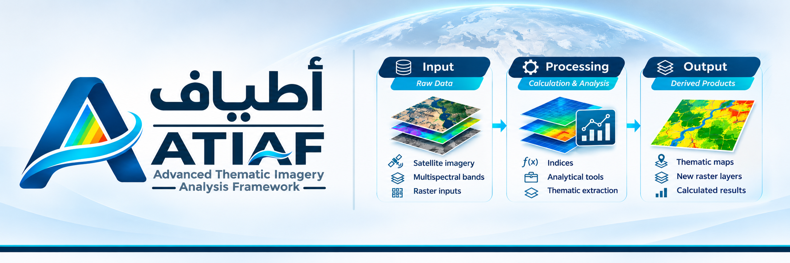

ADVANCED THEMATIC IMAGERY ANALYSIS FRAMEWORK
·
· · · MIT
الدليل التفاعلي يحتاج JavaScript محليًا. يمكنك فتح دليل الحسابات العربي مباشرة.
Open the English calculation guide directly when JavaScript is disabled.